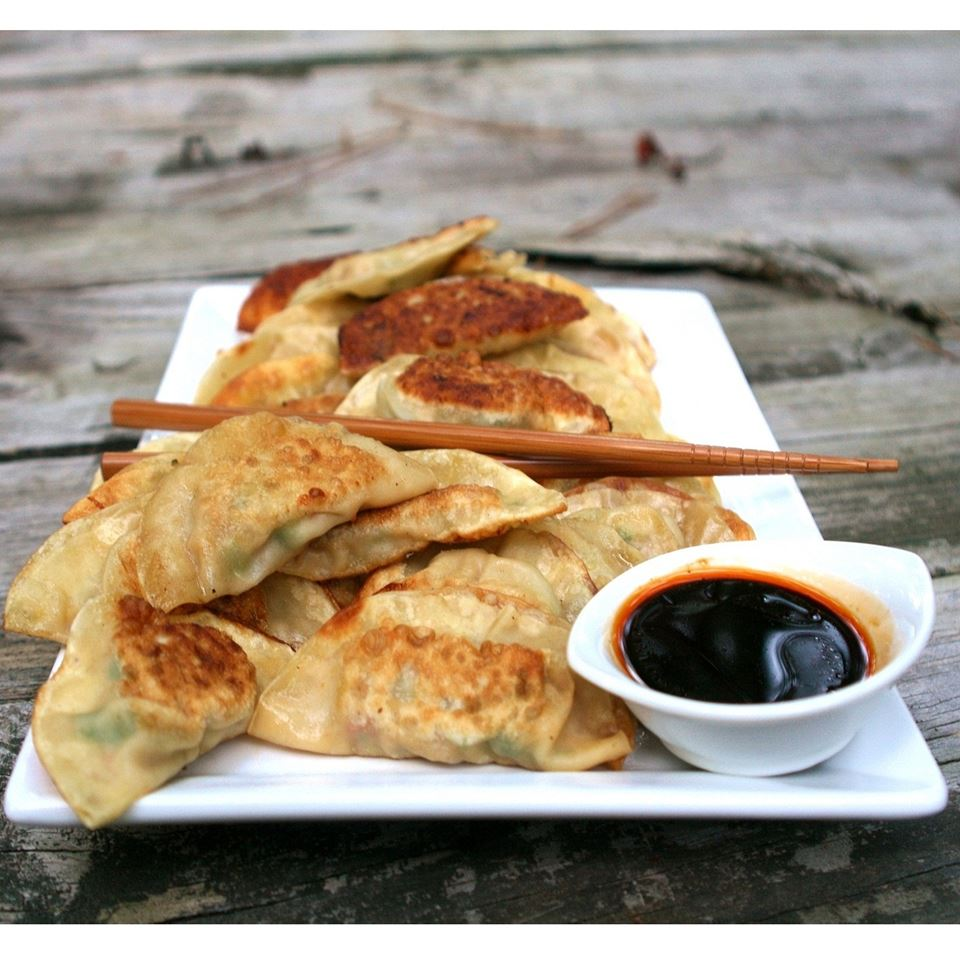

Potstickers

Description
Potstickers are a crispy, juicy, and filling food to share with your family or enjoy alone. They usually contain a well-balanced mixture of protein, diced vegetables, soy sauce, and oil, perfectly pan-fried to achieve their signature crispy bottoms. This recipe yields 25 potstickers.
Ingredients
- 1 package of dumpling wrappers
- 2 pounds ground pork
- 2 large leaves of cabbage, chopped
- 1/2 bunch of green onions, chopped
- 1/2 tablespoon fresh ginger, minced
- 1 tablespoon soy sauce
- 1/2 tablespoon sesame oil
- 2 tablespoon water
- salt and white pepper to taste
- vegetable oil
Instructions
Making the Filling
- Finely mince the fresh ginger, and chop the green onions and cabbage.
- Put the ground pork, ginger, green onions, and cabbage into a large mixing bowl. Use a large bunch of chopsticks to mix the ingredients together.
- Once the filling is well-mixed, add in the soy sauce, and slowly add in water as needed. The mixture should provide a good amount of resistance and be very slightly wet.
- Add salt and white pepper to taste.
Wrapping the Potstickers
- Take about 3/4 tablespoon of filling, and place it in the center of a dumpling wrapper.
- Dip a finger in some water, and spread water over the edges of the wrapper.
- Fold the wrapper tightly in half, sealing the edges you applied water to in the previous step. You may crease or fold the wrapper edge in any design you wish.
- Repeat until all the filling is used.
Pan Frying the Potstickers
- Heat a tablespoon of vegetable oil over medium heat in a pan with a lid.
- Place the potstickers inside the pan so that they sit flatly within the pan, ensuring there is oil underneath each potsticker.
- Fry the bottoms of the potstickers until they are golden-brown, then add a small amount of water and close the lid to allow the potstickers to steam.
- Once the skin of the potstickers turns slightly transculent and most of the water has evaporated, open the lid and allow the potstickers to cook for another 2-3 minutes.
- Serve alone or with a dipping sauce of your choosing. You may store leftover potstickers for 2-3 days in the refrigerator and reheat in the same way you initially cooked them but with a shorter duration.